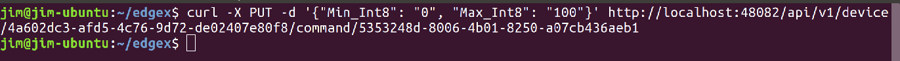
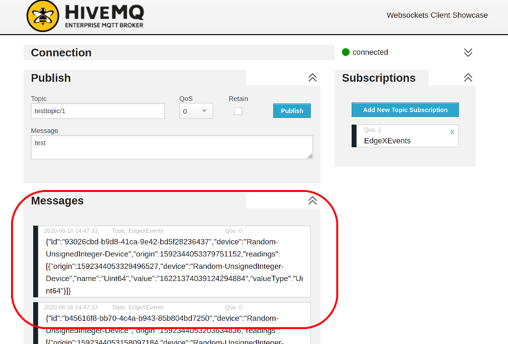

Quick Start
This guide will get EdgeX up and running on your machine in as little as 5 minutes. We will skip over lengthy descriptions for now. The goal here is to get you a working IoT Edge stack, from device to cloud, as simply as possible.
When you need more detailed instructions or a breakdown of some of the commands you see in this quick start, see either the Getting Started- Users or Getting Started - Developers guides.
Setup
The fastest way to start running EdgeX is by using our pre-built Docker images. To use them you'll need to install the following:
- Docker https://docs.docker.com/install/
- Docker Compose https://docs.docker.com/compose/install/
Running EdgeX
Info
Ireland (v 2.0) is the latest version of EdgeX and used by example in this guide.
Once you have Docker and Docker Compose installed, you need to:
- download / save the latest
docker-composefile - issue command to download and run the EdgeX Foundry Docker images from Docker Hub
This can be accomplished with a single command as shown below (please note the tabs for x86 vs ARM architectures).
curl https://raw.githubusercontent.com/edgexfoundry/edgex-compose/ireland/docker-compose-no-secty.yml -o docker-compose.yml; docker-compose up -d
curl https://raw.githubusercontent.com/edgexfoundry/edgex-compose/ireland/docker-compose-no-secty-arm64.yml -o docker-compose.yml; docker-compose up -d
Verify that the EdgeX containers have started:
docker-compose ps
Connected Devices
EdgeX Foundry provides a Virtual device service which is useful for testing and development. It simulates a number of devices, each randomly generating data of various types and within configurable parameters. For example, the Random-Integer-Device will generate random integers.
The Virtual Device (also known as Device Virtual) service is already a service pulled and running as part of the default EdgeX configuration.
You can verify that Virtual Device readings are already being sent by querying the EdgeX core data service for the event records sent for Random-Integer-Device:
curl http://localhost:59880/api/v2/event/device/name/Random-Integer-Device
 Verify the virtual device service is operating correctly by requesting the last event records received by core data for the Random-Integer-Device.
Verify the virtual device service is operating correctly by requesting the last event records received by core data for the Random-Integer-Device.
Note
By default, the maximum number of events returned will be 20 (the default limit). You can pass a limit parameter to get more or less event records.
curl http://localhost:59880/api/v2/event/device/name/Random-Integer-Device?limit=50
Controlling the Device
Reading data from devices is only part of what EdgeX is capable of. You can also use it to control your devices - this is termed 'actuating' the device. When a device registers with the EdgeX services, it provides a Device Profile that describes both the data readings available from that device, and also the commands that control it.
When our Virtual Device service registered the device Random-Integer-Device, it used a profile to also define commands that allow you to tell the service not to generate random integers, but to always return a value you set.
You won't call commands on devices directly, instead you use the EdgeX Foundry Command Service to do that. The first step is to check what commands are available to call by asking the Command service about your device:
curl http://localhost:59882/api/v2/device/name/Random-Integer-Device
This will return a lot of JSON, because there are a number of commands you can call on this device, but the commands we're going to use in this guide are Int16 (the comand to get the current integer 16 value) and WriteInt16Value (the command to disable the generation of the random integer 16 number and specify the integer value to return). Look for the Int16 and WriteInt16Value commands like those shown in the JSON as below:
{
"apiVersion": "v2",
"statusCode": 200,
"deviceCoreCommand": {
"deviceName": "Random-Integer-Device",
"profileName": "Random-Integer-Device",
"coreCommands": [
{
"name": "WriteInt16Value",
"set": true,
"path": "/api/v2/device/name/Random-Integer-Device/WriteInt16Value",
"url": "http://edgex-core-command:59882",
"parameters": [
{
"resourceName": "Int16",
"valueType": "Int16"
},
{
"resourceName": "EnableRandomization_Int16",
"valueType": "Bool"
}
]
},
{
"name": "Int16",
"get": true,
"set": true,
"path": "/api/v2/device/name/Random-Integer-Device/Int16",
"url": "http://edgex-core-command:59882",
"parameters": [
{
"resourceName": "Int16",
"valueType": "Int16"
}
]
}
...
]
}
}
get or set (or both) options. A get call will return a random number (integer 16), and is what is being called automatically to send data into the rest of EdgeX (specifically core data). You can also call get manually using the URL provided (with no additinal parameters needed):
curl http://localhost:59882/api/v2/device/name/Random-Integer-Device/Int16
Warning
Notice that localhost replaces edgex-core-command here. That's because the EdgeX Foundry services are running in Docker. Docker recognizes the internal hostname edgex-core-command, but when calling the service from outside of Docker, you have to use localhost to reach it.
This command will return a JSON result that looks like this:
{
"apiVersion": "v2",
"statusCode": 200,
"event": {
"apiVersion": "v2",
"id": "6d829637-730c-4b70-9208-dc179070003f",
"deviceName": "Random-Integer-Device",
"profileName": "Random-Integer-Device",
"sourceName": "Int16",
"origin": 1625605672073875500,
"readings": [
{
"id": "545b7add-683b-4745-84f1-d859f3d839e0",
"origin": 1625605672073875500,
"deviceName": "Random-Integer-Device",
"resourceName": "Int16",
"profileName": "Random-Integer-Device",
"valueType": "Int16",
"binaryValue": null,
"mediaType": "",
"value": "-8146"
}
]
}
}
 A call to GET of the Int16 device's Random-Integer-Device operation through the command service results in the next random value produced by the device in JSON format.
A call to GET of the Int16 device's Random-Integer-Device operation through the command service results in the next random value produced by the device in JSON format.
The default range for this reading is -32,768 to 32,767. In the example above, a value of -8146 was returned as the reading value. With the service set up to randomly return values, the value returned will be different each time the Int16 command is sent. However, we can use the WriteInt16Value command to disable random values from being returned and instead specify a value to return. Use the curl command below to call the set command to disable random values and return the value 42 each time.
curl -X PUT -d '{"Int16":"42", "EnableRandomization_Int16":"false"}' http://localhost:59882/api/v2/device/name/Random-Integer-Device/WriteInt16Value
Warning
Again, also notice that localhost replaces edgex-core-command.
If successful, the service will confirm your setting of the value to be returned with a 200 status code.
 A call to the device's SET command through the command service will return the API version and a status code (200 for success).
Now every time we call get on the Int16 command, the returned value will be 42.

A call to GET of the Int16 device's Random-Integer-Device operation after setting the Int16 value to 42 and disabling randomization will always return a value of 42.
Exporting Data
EdgeX provides exporters (called application services) for a variety of cloud services and applications. To keep this guide simple, we're going to use the community provided 'application service configurable' to send the EdgeX data to a public MQTT broker hosted by HiveMQ. You can then watch for the EdgeX event data via HiveMQ provided MQTT browser client.
First add the following application service to your docker-compose.yml file right after the 'app-service-rules' service (the first service in the file). Spacing is important in YAML, so make sure to copy and paste it correctly.
app-service-mqtt:
container_name: edgex-app-mqtt
depends_on:
- consul
- data
environment:
CLIENTS_CORE_COMMAND_HOST: edgex-core-command
CLIENTS_CORE_DATA_HOST: edgex-core-data
CLIENTS_CORE_METADATA_HOST: edgex-core-metadata
CLIENTS_SUPPORT_NOTIFICATIONS_HOST: edgex-support-notifications
CLIENTS_SUPPORT_SCHEDULER_HOST: edgex-support-scheduler
DATABASES_PRIMARY_HOST: edgex-redis
EDGEX_PROFILE: mqtt-export
EDGEX_SECURITY_SECRET_STORE: "false"
MESSAGEQUEUE_HOST: edgex-redis
REGISTRY_HOST: edgex-core-consul
SERVICE_HOST: edgex-app-mqtt
TRIGGER_EDGEXMESSAGEBUS_PUBLISHHOST_HOST: edgex-redis
TRIGGER_EDGEXMESSAGEBUS_SUBSCRIBEHOST_HOST: edgex-redis
WRITABLE_PIPELINE_FUNCTIONS_MQTTEXPORT_PARAMETERS_BROKERADDRESS: tcp://broker.mqttdashboard.com:1883
WRITABLE_PIPELINE_FUNCTIONS_MQTTEXPORT_PARAMETERS_TOPIC: EdgeXEvents
hostname: edgex-app-mqtt
image: edgexfoundry/app-service-configurable:2.0.0
networks:
edgex-network: {}
ports:
- 127.0.0.1:59702:59702/tcp
read_only: true
security_opt:
- no-new-privileges:true
user: 2002:2001
Note
This adds the application service configurable to your EdgeX system. The application service configurable allows you to configure (versus program) new exports - in this case exporting the EdgeX sensor data to the HiveMQ broker at tcp://broker.mqttdashboard.com:1883. You will be publishing to the EdgeXEvents topic.
For convenience, see documentation on the EdgeX Compose Builder to create custom Docker Compose files.
Save the compose file and then execute another compose up command to have Docker Compose pull and start the configurable application service.
docker-compose up -d
 Using the HiveMQ provided client tool, connect to the same public HiveMQ broker your configurable application service is sending EdgeX data to.
Using the HiveMQ provided client tool, connect to the same public HiveMQ broker your configurable application service is sending EdgeX data to.
Then, use the Subscriptions area to subscribe to the "EdgeXEvents" topic.
 You must subscribe to the same topic - EdgeXEvents - to see the EdgeX data sent by the configurable application service.
You must subscribe to the same topic - EdgeXEvents - to see the EdgeX data sent by the configurable application service.
You will begin seeing your random number readings appear in the Messages area on the screen.
 Once subscribed, the EdgeX event data will begin to appear in the Messages area on the browser screen.
Next Steps
Congratulations! You now have a full EdgeX deployment reading data from a (virtual) device and publishing it to an MQTT broker in the cloud, and you were able to control your device through commands into EdgeX.
It's time to continue your journey by reading the Introduction to EdgeX Foundry, what it is and how it's built. From there you can take the Walkthrough to learn how the micro services work together to control devices and read data from them as you just did.